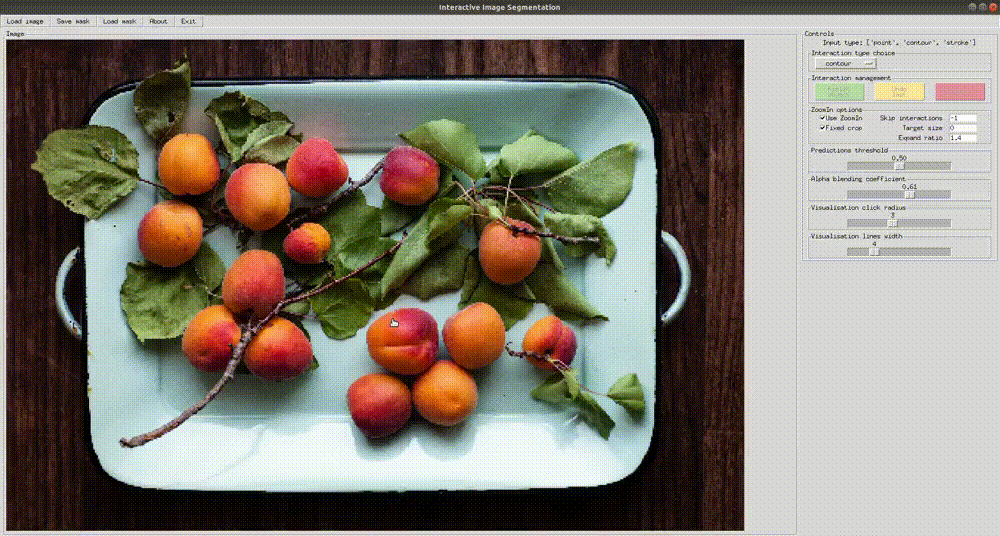

Baseline multi-input methods

Interactive image segmentation is the core task in image editing. Existing interactive segmentation datasets contain images at a much lower resolution than the resolution of modern smartphone cameras. Hence, evaluation on such benchmarks may not represent the quality of interactive segmentation in real applications. Moreover, the standard evalution protocols shadow some crucial aspects of interactive segmentation. First, they use an IoU metric which we consider inadequate for high-resolution images, since it does not reflect the quality of segmented object boundaries. Second, evaluation protocols are deterministic; accordingly, they do not measure the robustness of interactive segmentation methods. In this paper, we propose SAIC-IS, a novel interactive segmentation benchmark containing 1000 high-resolution images. We also formulate a randomized evalution protocol more suitable for assessing both accuracy, including boundary accuracy, and robustness of high-resolution interactive segmentation.
Our interactive segmentation pipeline consists of three parts: an interaction simulation module, an interactive branch, and a backbone. Three interaction types (click, stroke, contour) are generated given ground truth masks of mislabelled regions, with an initial object mask as the first mislabelled region. Model accepts 6-channel binary map encoding positive and negative interactions for each of three interaction types. We train and evaluate models with a convolutional HRNet18+OCR and a transformer-based Segformer backbone.